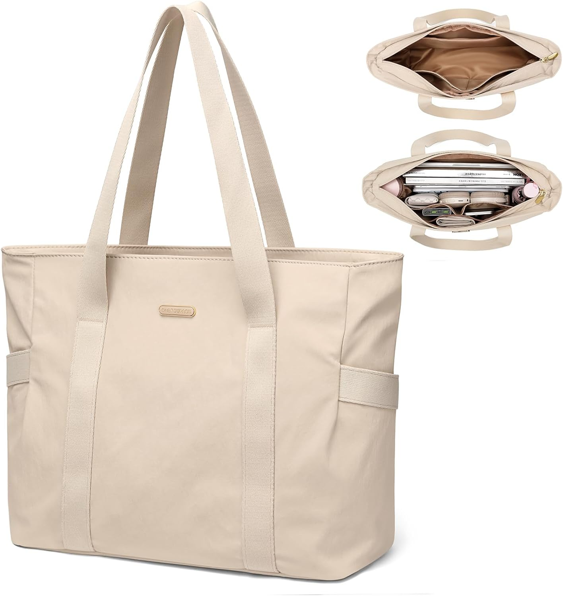

GOLF SUPAGS Bolsa Tote para Mujeres Bolso Hombro…: el bolso del día 196
Hay lunes que empiezan antes que tú. El bolso de hoy es el GOLF SUPAGS Bolsa Tote para Mujeres Bolso Hombro Multifuncional para Mujer de 14 Pulgadas Bolsa Tote Ligera para Negocios. No es un capricho de escaparate: es el que acompaña llevar la jornada con correa corta, con 4,6★ de nota media y 355 valoraciones que respaldan la decisión.

Un bolso no cambia tu día. Cambia la manera de entrar en él: con lo que necesitas, sin lo que sobra y con la certeza de que otras 355 personas ya hicieron la misma elección antes que tú. Lo que más repiten sus compradoras: capacidad.